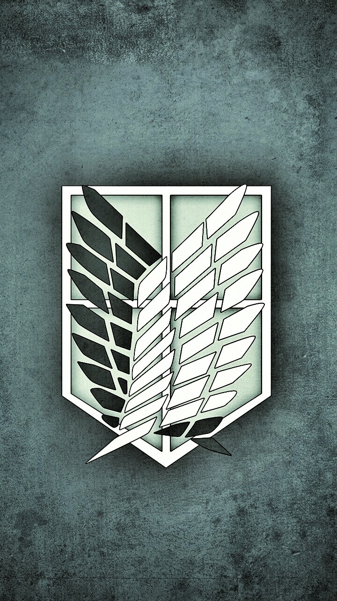
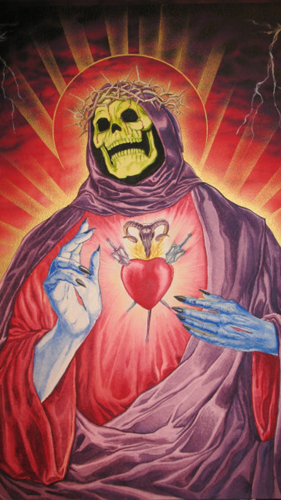
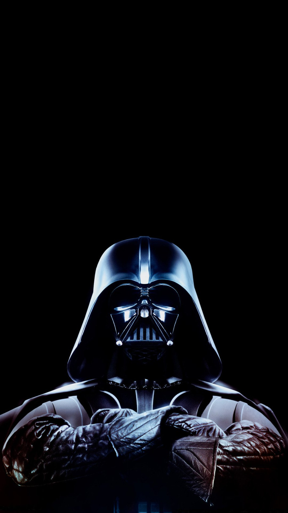

<ion-header>
  <ion-navbar>
    <ion-title>Slides</ion-title>
  </ion-navbar>
</ion-header>

<ion-content padding scrollX="false">
  <ion-slides loop="true" style="border-radius: 15px; height: 90%;" pager>
    <ion-slide class="slides">
      
    </ion-slide>
    <ion-slide class="slides">
      
    </ion-slide>
    <ion-slide class="slides">
      
    </ion-slide>
    <ion-slide class="slides">
      
    </ion-slide>
  </ion-slides>
  <ion-item no-lines text-right>
    <button ion-button (click)="goToSlide()" color="violet">Pular Slide</button>
  </ion-item>
</ion-content>
